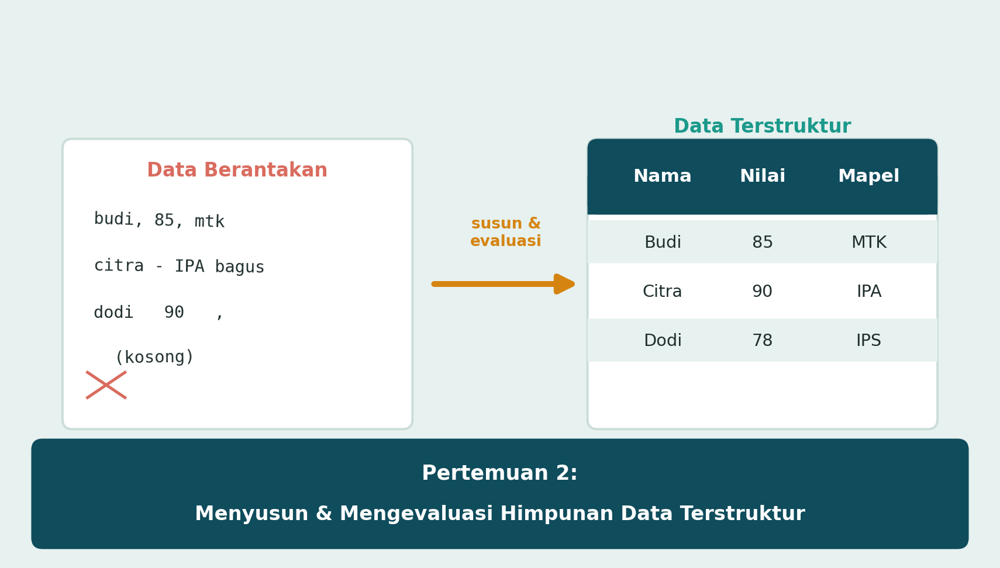
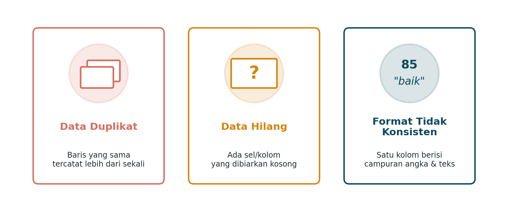
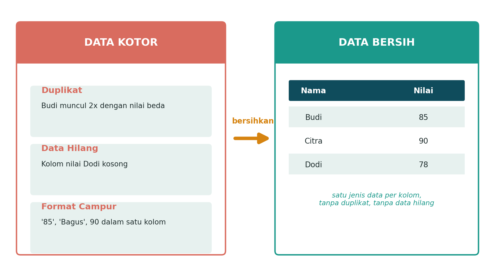
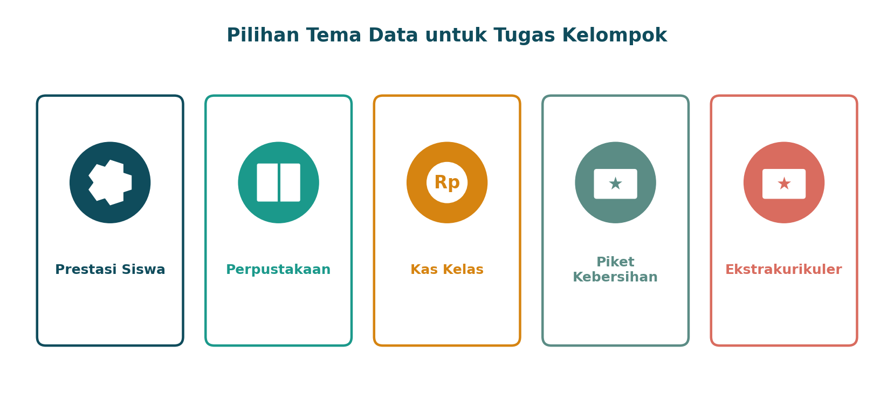
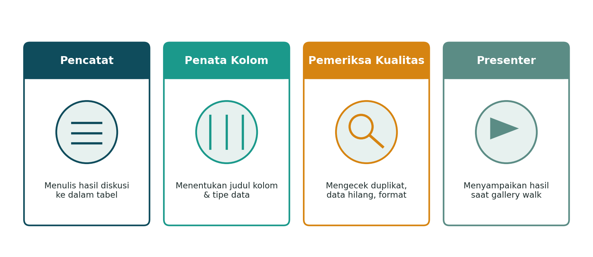
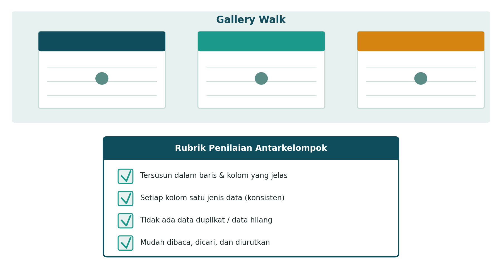

Sebelum Lanjut, Kita Ingat-Ingat Dulu Yuk
Masih ingat kan, apa itu himpunan data terstruktur? Yap — kumpulan data yang rapi, tersusun dalam baris dan kolom, punya judul yang jelas, dan gampang dicari-cari. Kamu juga sudah kenalan sama 5 tipe data: numerik, teks, tanggal, boolean, dan gambar.

Nah, sekarang bayangkan situasi ini: kamu ditugaskan mencatat siapa saja yang meminjam buku di perpustakaan sekolah. Tapi karena buru-buru, catatanmu jadi begini: "Budi pinjam Laskar Pelangi", terus beberapa hari kemudian "Budi, laskar pelangi lagi (?)", ada juga baris yang lupa ditulis tanggalnya, dan ada satu kolom yang kamu isi campur-campur — kadang angka, kadang tulisan "lupa".
Nah, catatan seperti itu, walaupun niatnya sudah dalam bentuk tabel, sebenarnya masih punya masalah. Yuk, kita bongkar apa saja masalah yang sering muncul saat menyusun data — dan bagaimana cara memperbaikinya!
Data yang "Sehat" itu Kayak Apa, Sih?
Nggak cukup cuma disusun dalam bentuk tabel — data yang baik juga harus "sehat" alias bebas dari masalah kualitas. Ada tiga masalah yang paling sering muncul:

Data Duplikat
Baris yang sama tercatat lebih dari sekali. Contohnya nama Budi muncul dua kali dengan judul buku yang mirip-mirip, padahal itu peminjaman yang sama.
Data Hilang
Ada sel atau kolom yang dibiarkan kosong, misalnya tanggal peminjaman yang lupa diisi.
Format Tidak Konsisten
Satu kolom berisi campuran jenis data, misalnya kolom "jumlah" isinya kadang angka (2), kadang tulisan ("lupa").
Dari Berantakan ke Rapi: Proses Membersihkan Data
Tenang, masalah kualitas data itu bisa diperbaiki kok! Perhatikan gambar berikut, bagaimana data yang tadinya berantakan bisa diubah jadi data terstruktur yang benar-benar bersih:

Prosesnya sederhana, ikuti langkah ini:
- Baca ulang semua data mentah yang ada, satu per satu.
- Tentukan kolom apa saja yang dibutuhkan, dan pastikan tiap kolom cuma berisi satu jenis data.
- Cari baris yang kembar (duplikat), lalu gabungkan atau hapus salah satunya.
- Cari sel yang masih kosong — isi kalau datanya ada, atau tandai dengan jelas kalau memang belum diketahui.
- Cek ulang seluruh tabel: apakah sudah memenuhi 4 ciri data terstruktur yang kamu pelajari di pertemuan lalu?
Kerja Bareng, Yuk! (Kali Ini Kamu Kerja Kelompok)
Di pertemuan ini, kamu akan bekerja dalam kelompok untuk mengubah data mentah menjadi himpunan data terstruktur — sungguhan, bukan cuma dari buku! Setiap kelompok akan mendapat satu tema data otentik dari lingkungan sekolahmu sendiri:

Supaya kerja kelompok lancar dan semua orang kebagian tugas, kalian akan berbagi peran seperti ini:

- Pencatat — bertugas menulis hasil diskusi kelompok ke dalam tabel.
- Penata Kolom — menentukan judul kolom apa saja yang dibutuhkan beserta tipe datanya.
- Pemeriksa Kualitas — mengecek apakah masih ada data duplikat, data hilang, atau format yang tidak konsisten.
- Presenter — menyampaikan hasil kerja kelompok saat sesi gallery walk nanti.
Gallery Walk: Pamerkan & Saling Menilai
Setelah tabel data kelompokmu jadi, saatnya "pameran"! Kegiatan ini disebut gallery walk — hasil kerja tiap kelompok dipajang, lalu kelompok lain berkeliling untuk melihat dan menilai.

Saat menilai hasil kerja kelompok lain, gunakan 4 pertanyaan berikut sebagai panduan (ingat lagi 4 ciri data terstruktur!):
- Apakah datanya sudah tersusun rapi dalam baris dan kolom?
- Apakah setiap kolom cuma berisi satu jenis data (konsisten)?
- Apakah tidak ada data yang duplikat atau kosong?
- Apakah datanya mudah dibaca, dicari, dan diurutkan?
Jangan lupa, saat giliran kelompokmu dikunjungi, si Presenter harus siap menjelaskan dan menjawab pertanyaan dari kelompok lain, ya!
Sebelum kerja kelompok dimulai, coba dulu latihan singkat ini secara mandiri di buku catatanmu:
- Tuliskan 3 baris data yang menurutmu "kotor" (boleh dikarang, misalnya daftar kontak teman yang berantakan).
- Tandai masalah kualitas apa saja yang ada — duplikat, data hilang, atau format tidak konsisten?
- Ubah menjadi tabel yang rapi dan bersih, lengkap dengan judul kolom.
Cek Pemahaman Yuk!
Klik tiap pertanyaan untuk melihat kunci jawabannya setelah kamu mencoba menjawab sendiri dulu.
1. Sebutkan tiga masalah kualitas data yang sudah kamu pelajari!
2. Kenapa mencampur angka dan teks dalam satu kolom bisa menyulitkan pengolahan data?
3. Apa saja langkah untuk mengubah data mentah menjadi data terstruktur yang bersih?
4. Sebutkan 4 peran dalam kerja kelompok dan tugas masing-masing!
5. Saat gallery walk, apa saja yang perlu kamu periksa dari hasil kerja kelompok lain?
Kalau kamu bisa jawab semuanya, kamu sudah siap jadi bagian dari kelompok yang solid hari ini!
Rangkuman
- Data yang baik tidak cukup hanya disusun dalam tabel — data juga harus bebas dari masalah kualitas.
- Tiga masalah kualitas data yang umum: data duplikat, data hilang, dan format tidak konsisten.
- Proses membersihkan data: baca ulang data mentah, tentukan kolom & tipe data, hapus duplikat, lengkapi data hilang, lalu cek ulang 4 ciri data terstruktur.
- Kerja kelompok dibagi menjadi 4 peran: Pencatat, Penata Kolom, Pemeriksa Kualitas, dan Presenter.
- Gallery walk adalah kegiatan saling menilai hasil kerja antarkelompok menggunakan rubrik berdasarkan 4 ciri data terstruktur.